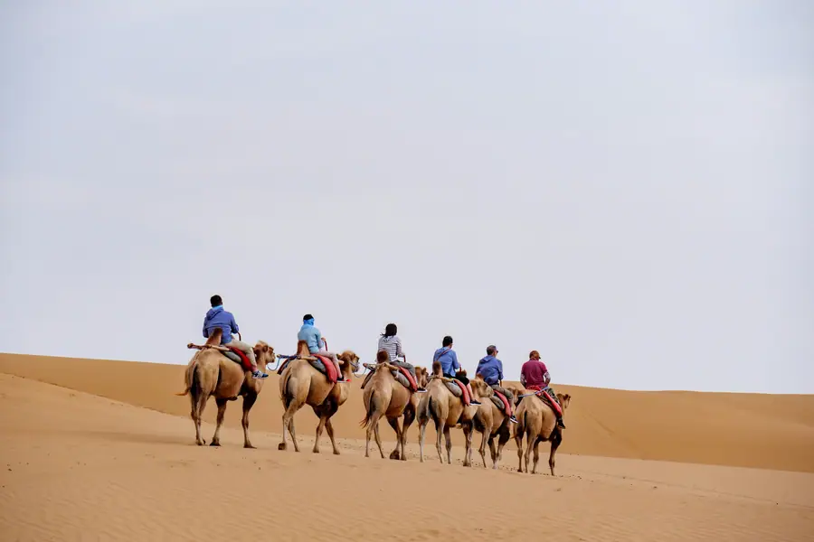
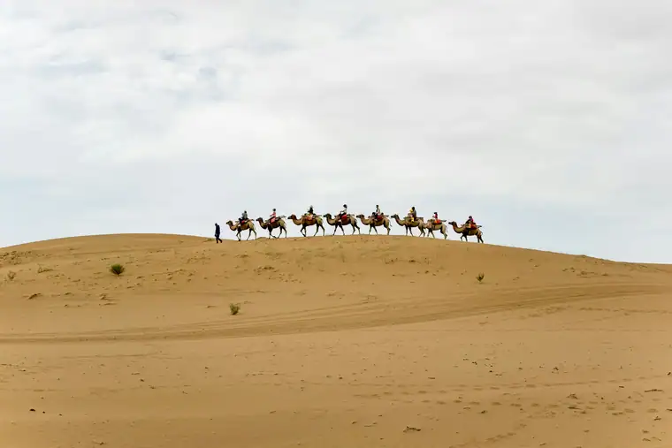
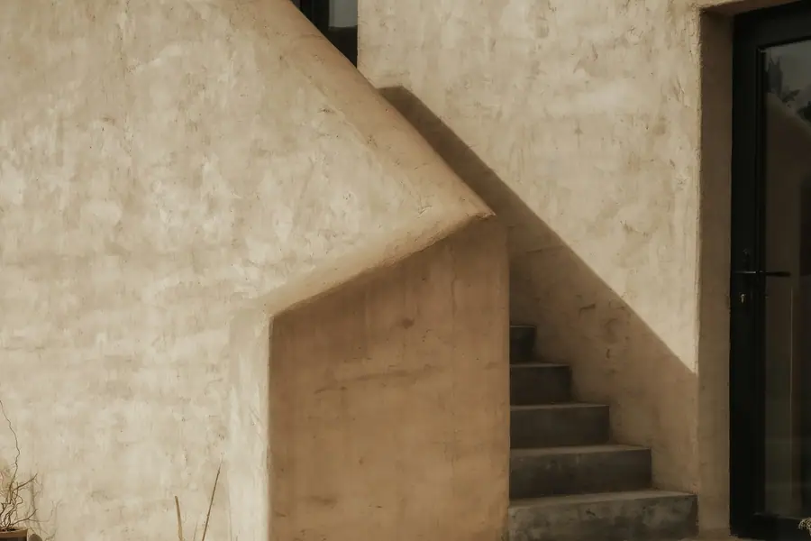

Zhongwei Airport Transfer & Private Car
Yinchuan (INC) Airport to Zhongwei desert, Shapotou Yellow River wetlands, and Helan Mountain wine region with licensed professional driver. Ningxia desert-oasis city. Fixed price.
Zhongwei in Pictures
Real scenes from Zhongwei — landmarks, streets and everyday life.



Zhongwei at a Glance
Ningxia desert-oasis city — where the Tengger Desert meets the Yellow River. Famous for Shapotou sand dunes, reed raft rides, and the Helan Mountain wine region.
Name Origin of Zhongwei
The name "Zhongwei" (中卫) means "Central Guard" — historically a frontier garrison town guarding the central route into the western territories. Located in the Ningxia Hui Autonomous Region (宁夏回族自治区), Zhongwei sits at the eastern foot of the Helan Mountains (贺兰山) and on the southern edge of the Tengger Desert (腾格里沙漠), with the Yellow River flowing through the city. The city is a unique desert-oasis environment.
Education & Culture
Zhongwei is a gateway to the Ningxia wine region along the Helan Mountain foothills. The region has over 40 wineries producing China premium wines, winning international recognition. The city also has a Hui Muslim cultural influence — Zhongwei has a significant Hui minority population and the cuisine reflects this with Muslim restaurants throughout the city.
Transportation
Zhongwei does not have its own commercial airport. The nearest major airport is Yinchuan Hedong International Airport (INC), about 150 km away — approximately 2 hours by road via the G70 Yinchuan-Yongning-Zhongwei Expressway. Zhongwei is served by Zhongwei Railway Station (中卫站) and Zhongwei Zhongning Railway Station (中卫中宁站) on the Yinchuan-Zhongwei rail line. Our private car is the most comfortable option from Yinchuan Airport.
Natural Environment
Zhongwei occupies a dramatic geographic position — at the southern edge of the Tengger Desert (腾格里沙漠), with the Yellow River running right through the city, creating an unusual desert-oasis landscape. The nearby Helan Mountains to the north block the desert and create a unique microclimate ideal for viticulture. The area has very low rainfall and abundant sunshine year-round.
Zhongwei Maps & Transit
Best Time to Visit Zhongwei
The climate record of Zhongwei decides when the city is at its most comfortable to walk.
The annual average temperature is 9.2 °C; annual rainfall averages 176 mm; July is the hottest month at 22.9 °C; January the coldest at -7.2 °C; The climate pattern includes continental influence, drought, wide day-night temperature swings.
Spring
Monthly means in March, April, May run 4–17 °C. Rainfall over those three months totals about 32 mm.
Summer
Monthly means in June, July, August run 21–23 °C. Rainfall over those three months totals about 104 mm.
Autumn
Monthly means in September, October, November run 2–16 °C. Rainfall over those three months totals about 36 mm.
Winter
Monthly means in December, January, February run -7–-3 °C. Rainfall over those three months totals about 3 mm.
Top Zhongwei Attractions
From desert sand dunes meeting the Yellow River to world-class vineyards — discover Ningxia desert-oasis city.
Popular Zhongwei Routes
Fixed-price private car service for Zhongwei most popular journeys.
🌊 INC Yinchuan Airport - Zhongwei City
From ¥221($31.13)~150 km - 2 hours - Economy/Business/MPV
Zhongwei has no airport. Your driver meets you at Yinchuan Hedong International Airport (INC) arrival hall and drives you directly to your Zhongwei hotel. No long-distance bus or train with luggage — door-to-door comfort.
🏜️ Shapotou Desert Day Trip
From ¥186($26.2)~20 km - 30 min each way - Half day
Visit Shapotou Scenic Area where the desert meets the river. Camel rides across the dunes, traditional reed raft ride on the Yellow River, desert surfing, and sunset viewing. Your driver waits at Shapotou and returns you to your hotel.
⛰️ Helan Mountain Wine Tour (Full Day)
From ¥186($26.2)~80 km - 1.5 hours north - Full day
Tour the Helan Mountain wine region — visit 2-3 wineries for cellar tours and wine tastings. The region produces China premium wines that have won international awards. Your driver knows the best wineries to visit for tastings.
🌊 Yellow River + Old City Day Tour
From ¥186($26.2)City tour - 4-5 hours - Business vehicle
Walk the old city walls, visit the Yellow River waterfront, explore the Hui Cultural Museum, and visit XiJiao Tan wetland. Your driver knows the best riverside restaurants for Hui Muslim cuisine.
Transparent Pricing in Zhongwei
Published rates, no estimate games. Check the numbers yourself before you book — and the price you see is the price your driver is paid from.
Fixed Price List — 中卫 (Zhongwei)
Published rates from our 2026 quote sheet. Renminbi first, USD for reference at 1 USD = ¥7.10. Every price below already includes tolls, parking, driver service and free airport waiting time (up to 60 minutes after your flight lands) — nothing is added on the day.
🛬 Zhongwei Airport & Intercity Transfer Rates
One flat fare for airport pickup, drop-off or city-to-city — intercity costs the same as the airport run. 35 km and 60 minutes included; beyond that we charge by the minute and the kilometre at the rates shown.
| Vehicle | Seats | Bags | Fixed fare | USD | Beyond 35 km / 60 min |
|---|---|---|---|---|---|
| 4-seat Economy Sedan | 4 | 2 | ¥186 | ≈ $26.2 | ¥0.99/min · ¥4.42/km |
| 4-seat Comfort Sedan | 4 | 2 | ¥265 | ≈ $37.32 | ¥1.1/min · ¥4.89/km |
| 6-seat Business Van | 6 | 3 | ¥334 | ≈ $47.04 | ¥1.17/min · ¥5.2/km |
| 8-11-seat Business Van | 11 | 4 | ¥562 | ≈ $79.15 | ¥1.52/min · ¥6.76/km |
| 12-18-seat Minibus | 18 | 4 | ¥655 | ≈ $92.25 | ¥1.7/min · ¥7.54/km |
| 19-55-seat Coach Bus | 55 | 5 | ¥702 | ≈ $98.87 | ¥1.93/min · ¥8.58/km |
🚗 Hourly Private Charter
Book the car and the hours, keep the car for the day. Unused kilometres can be carried into the next tier, so a long day never turns into a penalty. The driver stays with you — you set the stops.
| Vehicle | 2h / 35km | 4h / 50km | 6h / 75km | 8h / 100km | 10h / 125km |
|---|---|---|---|---|---|
| 4-seat Private Car | ¥221 | ¥364 | ¥468 | ¥546 | ¥585 |
| 6-seat Business Van | ¥299 | ¥494 | ¥663 | ¥767 | ¥793 |
| 8-11-seat Business Van | ¥431 | ¥711 | ¥955 | ¥1104 | ¥1142 |
| 12-18-seat Minibus | ¥517 | ¥854 | ¥1146 | ¥1325 | ¥1370 |
| 19-55-seat Coach Bus | ¥809 | ¥1294 | ¥1725 | ¥1968 | ¥2103 |
Why travellers book Zhongwei with Chinawheely
Six things you get with every booking — in Zhongwei and across all 346 cities on the platform.
Licensed travel agency, not a ride-hail app
Chinawheely is a registered travel agency (L-HUB-101603). Your booking is a travel contract with a licensed operator — not a broker handing your number to whoever answers the phone.
One locked price, shown before you pay
The price you see is the price you pay. Tolls, parking, driver service and airport waiting time are already inside it. No surge pricing, no meter, no cash-on-the-day surprise.
Flight tracked, waiting time on us
We watch your flight number in real time. If it lands late or is delayed, your driver shifts with it and the waiting time stays on us — not on your bill.
A licensed driver who knows the city
Every car is driven by a professional local driver who knows the routes, the shortcuts and the parking that actually works near the attractions — with English communication and a name board on arrival.
Free changes up to 48 hours before
Plans move. Reschedule or cancel any booking free of charge up to 48 hours before your scheduled pickup, straight from your confirmation link.
A real human on WhatsApp, 8AM–12AM Beijing time
One message reaches a person who can re-price, re-route or re-plan your trip on the spot. No ticket queue, no chatbot loop.
Book Zhongwei at the published price
Pick your vehicle, see the fare line by line, and pay by PayPal or Alipay. Free changes up to 48 hours before pickup — or ask on WhatsApp and we will hold a car for you.
The quote is valid for 48 hours, and you can change or cancel free up to 48 hours before pickup.
Getting to Zhongwei: Airports & Railway Stations
Zhongwei has no airport. Here is how to reach Zhongwei from the nearest major hubs.
Nearest Airports
🌊 Yinchuan Hedong International Airport (INC)
150 km to Zhongwei - 2 hours by road
INC is the main aviation hub for Ningxia Hui Autonomous Region. It has one terminal and serves domestic flights across China as well as some international routes to Central Asia and Southeast Asia. The drive to Zhongwei via the G70 expressway takes approximately 2 hours. Our private car is the most comfortable option.
🏯 No Local Airport in Zhongwei
Zhongwei city itself has no commercial airport
There is no airport in Zhongwei city. The closest is Yinchuan Hedong (INC) at 150 km. Some travelers also consider Zhongwei railway as the most convenient arrival option — high-speed trains connect Zhongwei with Yinchuan in just 1 hour.
Zhongwei Railway Stations
🗼 Zhongwei Railway Station (中卫站)
Main station - Near city center
The main railway station serving Zhongwei, with connections to Yinchuan (1 hour by high-speed rail) and other cities. The station is about 5 km from the city center. Private car pickup recommended.
🗼 Zhongwei Zhongning Station (中卫中宁站)
Secondary station - Eastern district
Serves regional trains within Ningxia. Less important for inter-city arrivals but useful for travel within the Zhongwei area.
🗼 Need a Station Pickup?
We meet you at the exit with a name board and help with luggage.
Book Station TransferZhongwei Best Photo Spots
Capture Ningxia desert-oasis city from its most scenic angles.
🏜️ Shapotou Desert Dunes at Sunset
Best at golden hour
The Shapotou sand dunes glow orange and gold as the sun sets over the Tengger Desert. The view of the Yellow River in the foreground with the dunes rising behind it is one of China most photographed desert landscapes.
🌊 Yellow River Reed Raft (羊皮筏子)
Best on a calm morning
Traditional reed rafts made of inflated sheepskins and bamboo have been used on the Yellow River for centuries. Watching the rafters navigate the river with long poles, with the dunes as backdrop, is one of Zhongwei most iconic scenes.
⛰️ Helan Mountain Vineyard at Harvest
Best in September-October
The Helan Mountain wine region in autumn harvest season is stunning — rows of vines heavy with grapes against the dramatic backdrop of the purple Helan Mountains. Many wineries offer photography sessions during harvest.
🌊 Yellow River Gucheng at Dusk
Best at sunset
The old city walls of Zhongwei Gucheng are silhouetted against the evening sky, with the Yellow River reflecting the city lights. The Hui Muslim architecture of the mosques adds cultural depth to the riverside scene.
⛰️ Tengger Desert Horizon
Best at sunrise
The unbroken horizon of the Tengger Desert as the sun rises over the dunes is breathtaking. The morning light creates sharp shadows on the dunes and the cool desert air is refreshing after a night in the oasis city.
🏖️ XiJiao Tan Wetland at Dawn
Best at sunrise
Mist rising from the wetland at dawn, with the Helan Mountains in the background and migratory birds taking flight. The contrast between the misty wetland and the arid desert beyond is striking.
Food & Shopping in Zhongwei
Must-Try Zhongwei & Ningxia Cuisine
Hui Muslim Lamb Noodles (手抓羊肉面)
Zhongwei has excellent Hui Muslim cuisine. Hand-grabbed lamb (手抓羊肉) — tender braised lamb eaten with the hands and dipped in chili powder — is a signature dish. Served with handmade noodles and garlic sauce at Muslim restaurants near the old city.
Yangrou Paomo (羊肉泡馍)
Lamb broth poured over torn flatbread (paomo), served with lamb meat and pickled vegetables. A hearty northwestern specialty. Best at traditional Muslim restaurants in the old city area of Zhongwei.
Goji Berry Tea (枸杞茶)
Ningxia is famousfor its goji berries (枸杞). Fresh goji berry tea is served at riverside tea houses in Zhongwei. The bright red berries are harvested in summer and make a refreshing, slightly sweet tea. Your driver can take you to a goji farm for fresh-picked berries.
Desert Dates (沙漠枣)
The arid climate around Zhongwei is ideal for growing exceptional dates — sweet, fleshy, and with a rich caramel flavor. Available fresh in autumn or dried year-round at the Zhongwei market. A healthy and delicious local snack.
Ningxia Premium Grape Wine
The Helan Mountain wine region produces China premium wines — particularly Cabernet Sauvignon and Marselan — that have won major international awards. The best winery shops offer tastings and direct purchase. A sophisticated souvenir.
Shopping Destinations
Zhongwei Night Market (中卫夜市)
The evening market near the old city walls comes alive at night with food stalls, souvenir vendors, and local crafts. Try the street food and pick up desert-themed souvenirs.
Helan Mountain Winery Shops
Most wineries in the Helan Mountain region have retail shops selling their wines directly. Prices are often better than retail and you can speak directly with the winemakers about recommendations.
What to Buy in Zhongwei
Ningxia Goji Berries (枸杞)
Ningxia produces the finest goji berries in China — plump, bright red, and less bitter than other varieties. Available at the Zhongwei market and specialty shops. Used in tea, soups, and as a healthy snack.
Helan Mountain Wine
Premium Chinese wines from the Helan Mountain region, particularly Cabernet Sauvignon and Marselan. Award-winning producers include Xixia King (西夏王), Changyu, and Helan Qingxue (贺兰晴雪).
Desert Sand Art Bottles
Intricate bottle artworks depicting desert scenes, dunes, and camels, filled with colored sand from the Tengger Desert. Popular souvenirs made by local artisans at craft shops in Zhongwei and Shapotou.
Hui Muslim Silverware
Traditional Hui Muslim silver accessories — pendants, bracelets, and decorative items — available at the old city market. The designs incorporate Islamic and Chinese cultural elements.
Medical History & TCM Heritage of Zhongwei
Discover the traditional medicine and healing heritage of Ningxia desert-oasis city.
Ningxia Goji Berry (宁夏枸杞)
China premium goji berry origin. Ningxia goji berries are recognized as the finest quality goji in China and globally, known for their plump shape, bright red color, and balanced sweetness without bitterness. Traditional Chinese Medicine (TCM) classifies goji berries as a "cooling" herb used to nourish the liver and kidneys, improve eyesight, and boost the immune system.
Where to find it: Zhongwei market, specialty goji shops, and goji farms open to visitors. Ask your driver to arrange a visit to a goji orchard during harvest season (June-August).
Desert Herbal Medicine
The Tengger Desert and Helan Mountain region are home to unique medicinal plants adapted to the arid environment. Cistanche deserticola (肉苁蓉, "desert ginseng") — a parasitic plant that grows on sandfixing plants — is highly prized in TCM for its yang-strengthening properties. Astragalus (黄芪) from the desert margins is another important medicinal herb.
Where to find it: Available at TCM pharmacies and specialty herb shops in Zhongwei.
Hui Muslim Healing Traditions
The Hui Muslim community in Zhongwei has preserved unique healing traditions blending Islamic and Chinese medicine. Hui medicine (回药) incorporates desert herbs, halal principles, and specific dietary therapies. Hui herbal teas for common ailments are a distinctive part of local health culture.
Where to experience it: Consult a Hui medicine practitioner at the Zhongwei Hui Cultural Museum or at local Muslim clinics.
Mineral Hot Springs
The desert geology around Zhongwei produces mineral-rich spring water with therapeutic properties. Desert hot spring resorts near Shapotou use the mineral water for spa treatments, believed to help with skin conditions, joint pain, and circulation. The mineral content is unique due to the deep aquifer filtering through desert sand and rock.
Where to find it: Hot spring resorts near Shapotou Scenic Area, about 20 km from Zhongwei city.
Zhongwei Local Secrets
Insider tips to help you experience Zhongwei like a local.
Book INC Airport Transfer 24 Hours Ahead
Zhongwei has no airport — your Yinchuan Airport (INC) transfer is essential. The 150 km journey is not covered by regular taxis or ride-hailing apps. Book at least 24 hours ahead so we can coordinate with your flight and ensure a driver is available.
Reed Raft is a Must-Do
The traditional sheepskin reed raft (羊皮筏子) on the Yellow River at Shapotou is one of China most unique transport experiences — the same technique used for hundreds of years. Do not miss it. Your driver can arrange it as part of your Shapotou visit.
Best Time for Wine: September-October
The Helan Mountain wineries are most active during harvest season (late September to October) — this is when you can see the grape picking, cellar tours, and sometimes participate in vintage activities. Book winery visits ahead.
Desert Activities: Early Morning
Desert activities at Shapotou are best in the early morning — before 10 AM — when the sand is cool and the light is ideal for photography. Afternoon desert temperatures can exceed 40C in summer. Your driver can pick you up at 6 AM for the 20 km drive to Shapotou.
Ask Your Driver for the Best Lamb Restaurant
The best Hui Muslim restaurants in Zhongwei are not in tourist areas — they are along the old city streets near the city walls. Your driver knows the family-run restaurants where locals eat. Hand-grabbed lamb with handmade noodles is unforgettable.
Goji Farm Visit in Harvest Season
If you visit in June-August, ask your driver to arrange a visit to a goji berry orchard. The harvest is done by hand and you can pick and taste fresh goji berries — completely different from the dried version. Fresh goji berries are juicy, mildly sweet, and nothing like dried ones.
Book Your Zhongwei Airport Transfer
Fixed price, licensed professional driver, free flight tracking. From Yinchuan Hedong Airport (INC) to any Zhongwei hotel or attraction.
Get Instant QuoteQuestions? WhatsApp +86-155-2777-1775
More China destinations
Compare routes, published prices and local driver tips across the cities we cover.
Other cities in Ningxia
Popular destinations